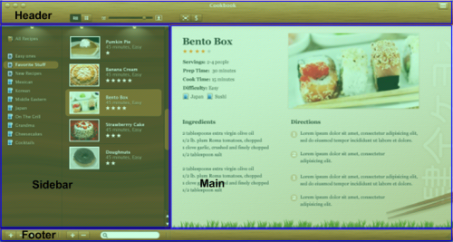
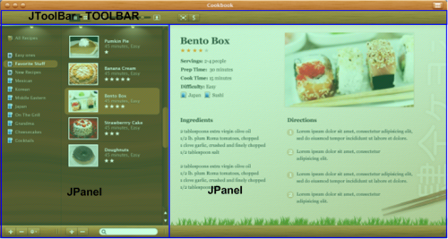
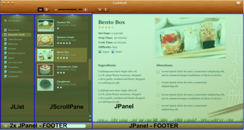

In the first step we have identified the decoration and functional areas of Cookbook UI. The screenshot below shows the application decoration areas:
and the next screenshot shows the application functional areas:

As you can see, the application decoration and functional areas are not the same. During this phase we are going to map the application functional areas to Swing container hierarchy and the application decoration areas to Substance decoration areas.
This phase will in most cases take you from the realm of pure design to the limitations of Swing. While the application functional areas will in most cases define the hierarchy of your Swing containers, the mapping itself might not be straightforward. Designer's work on the UI mockup screens does not consider the implementation limitations of the specific UI toolkit. This is especially true for such a dynamic area as resizability behavior - what happens when the user resizes the application window (if he is allowed to do so by the application code)?
If the UI design is done in a pixel-based tool (such as Photoshop), the most obvious choice for a Swing implementor would be to use absolute (null) layout manager. This is usually considered a bad Swing practice. Instead, you would usually employ a combination of core, third-party and custom layout managers that handle the initial sizing of the components and the dynamic resizing behavior.
This phase will take you further away from the pure design to the limitations of Substance. If you are not familiar with the concept of decoration areas and painters in Substance, please first read the following documentation:
The list of available Substance decoration areas is defined in the
org.jvnet.substance.painter.decoration.DecorationAreaType
enum.
As the documentation of
setDecorationType()
specifies, the passed decoration area type is applied to the component itself
and recursively on all its children, unless a child is marked with another
decoration area type (with the same API). When is this behavior useful?
We're going to see a more complicated example in a short while, but in the
meantime here is a simple one:
This screenshot shows a footer bar of the recipe list panel. As you can see, while
the add / remove buttons are using the same colors as the footer bar itself, the
text field is skinned with a different color scheme. In Substance API, you would
mark the footer bar with FOOTER
and the search text field with NONE.
All the buttons would get the FOOTER
from their parent (footer bar), while the search text field will use the
color
scheme bundle of the NONE
decoration are type.
While not necessarily required, it is useful to remember that most core (and
supported third-party) components are already marked to belong to a specific
Substance decoration area. This comes especially handy for the header application
area. The header portion of Cookbook UI can be mapped to a decorated title pane
(PRIMARY_TITLE_PANE type) and an
unfloatable toolbar (TOOLBAR
type). While not necessarily required, reusing existing Swing components will
make the implementation part easier.
What is another usage of using different decoration area types on a parent component and one of its children? The answer is quite simple - when the application functional and decoration areas are different (like is the case with Cookbook UI). The screenshot below shows the sidebar part of Cookbook:

There is a clear visual continuation between the category list and recipe list as far as the decoration areas go. The textures (dark mahogany and golden brush) flow seemlessly across the boundaries of the functional areas, and the top bar with evenly-spaced diffused lights further enforces this continuation. The final polish comes from the vertical separator that uses matching colors in the different decoration areas.
If, for the reasons stated above, you have decided to build your Swing container
hierarchy based on the application functional areas, you can use the matching
Substance decoration area types on the specific sub-panels (without mixing the different
types in the same hierarchy path). However, using the
setDecorationType()
API is only one part of the implementation. The second part comes from your custom
decoration
painter that is implementing the painting itself. While this topic is subject
of the next phase, the ease of implementation is going to dictate mixing different
decoration area types as shown in the next section.
This section will show the Swing hierarchy behind the Substance-based implementation of Cookbook UI and the matching decoration area types. While most of the reasons behind this implementation are given in the sections above, one of them is part of the next phase (simplifying the implementation complexity of the custom decoration painter).
We're going to start with the layout of the content pane:
Here, we're using the core BorderLayout
and add toolbar at NORTH, sidebar at
WEST and main recipe panel at
CENTER.
The next screenshot shows the children of the sidebar panel:
The top part is the only custom component which is not painted by Substance.
This is done for purely implementation complexity considerations - it is much easier
to override the paintComponent()
method to emulate the light holder than to do it with Substance decoration painters.
The CENTER part is another panel which
is decorated with GENERAL area type.
As the next phase will show, this makes it easier to implement the
evenly-spaced diffused lights (the continuous look of the texture is not
a factor in this particular decision).
Inside this GENERAL-decorated panels
we have the BorderLayout with two
panels:
Note that these two panels do not have any decoration area type installed on them
- they get the GENERAL from the parent
panel.
The last diagram shows the last level of Swing hierarchy as far as mapping the decoration areas goes:
Here, each (functional) panel has a footer bar and the main area. The footer
bar is a panel decorated with FOOTER,
thus overriding the decoration area type inherited from the grandparent panel.
The main areas do not have any decoration area types installed on them,
inheriting the grandparent panel settings.
The final piece comes by installing the NONE
type on the search text field in the second footer bar, thus overriding the inherited
FOOTER setting.